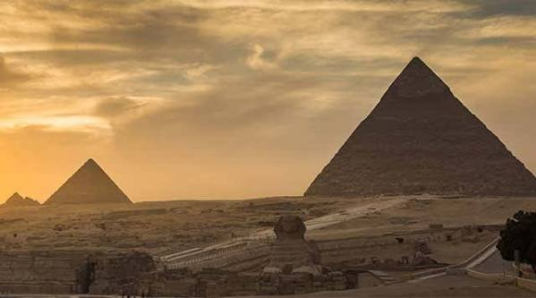
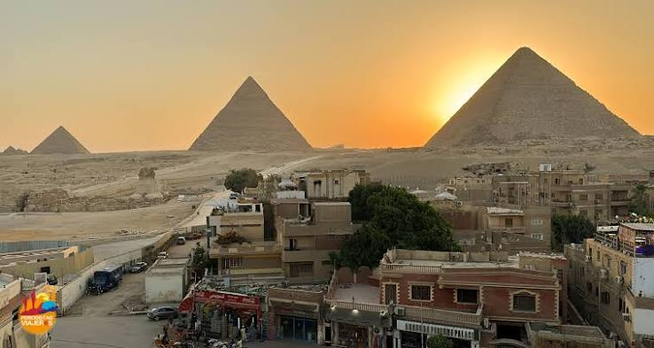

|
 |
IntroducciónLocalizadas en la meseta de Giza, a 18 kilómetros de El Cairo, las Pirámides no solo son los monumentos más importantes de Egipto, sino también los más antiguos del mundo. Se trata de construcciones funerarias que se edificaron bajo las órdenes de faraones de diferentes dinastías. Las tres más importantes son: Keops, kefrén y Micerinos. |
Otros datos de interésLos faraones eran momificados y se introducían en las pirámides junto con algunos alimentos y sus pertenencias más preciadas para que les acompañaran en su último viaje. Aunque no se conoce con exactitud la fecha de construcción de las grandes pirámides, se estima que las obras comenzaron sobre el año 2500 a.C. Entre los enigmas que envuelven tan preciados monumentos se encuentra el misterio de su construcción ¿Cómo lograron desplazar los enormes bloques y cómo se logró la construcción de tan perfectas estructuras en aquella época? Son numerosas las teorías sobre el tema entre las que, como no podría ser de otro modo, siempre hay quienes atribuyen las construcciones a los extraterrestres. |
 |